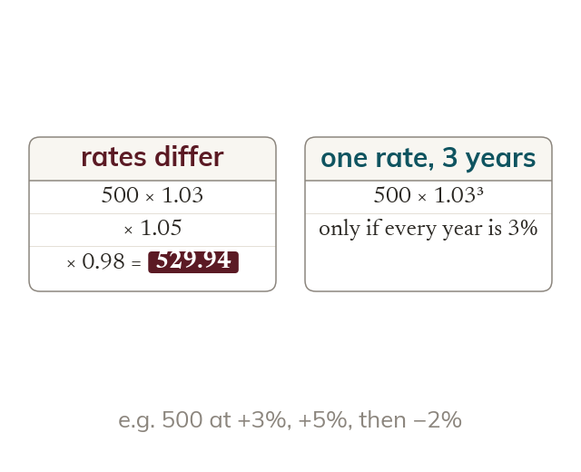

When the rate differs between periods, multiply in sequence
The power shortcut needs the same rate every period. When the rates differ, multiply each period's multiplier in turn.
The power shortcut (multiplierⁿ) only works when every period uses the SAME rate. When the rate changes from period to period, each period needs its own multiplier, and the multipliers are multiplied together in sequence - exactly as with successive percentage changes in Lesson 9.5.2 - rather than any single multiplier being raised to a power. For three years at three different rates, the calculation is original × multiplier1 × multiplier2 × multiplier3, in the order the rates occurred.